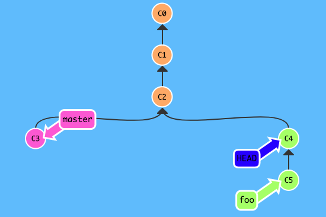
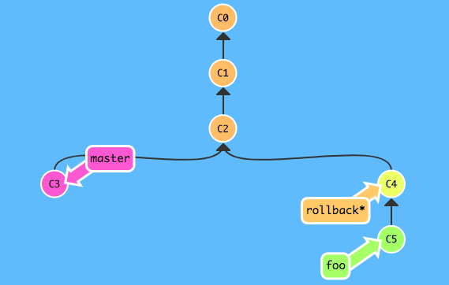
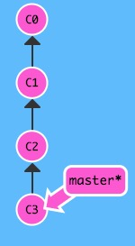
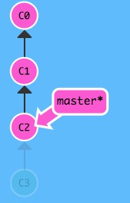
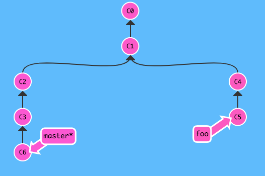
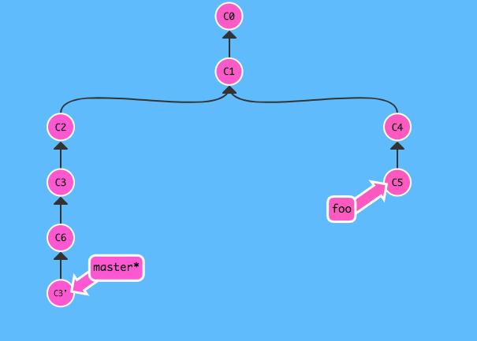
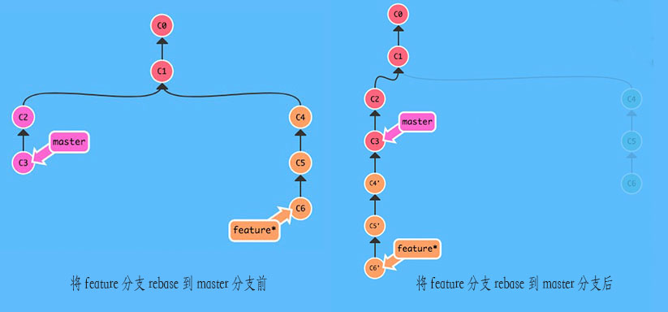
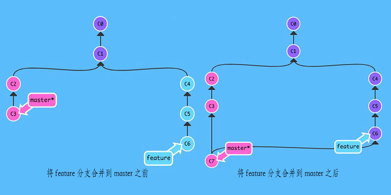

这是一篇最近在学习git的时候有感而发的文章，因为git里有许多不同的命令，但进行操作后可能会产生相同或者近似的行为，打算写一个系列的文章来捋清楚或者说记录个中的关系，全系列分为三篇文章，而每篇文章会讲两个主题。
文章中所有的示意图中，当前检出的
git分支为在分支名右侧加了*号的分支。如：master*
回滚代码是日常开发中的一个不常使用，但是又不可或缺的功能。在git里，有三个命令是可以用来回滚代码的，它们分别是revert、reset和checkout。
实际上单说checkout是一个回滚代码的命令又并不是那么准确，当我们checkout到某个提交点的时候我们会造成分离的HEAD指针（Detached HEAD）的情况，如果不创建新分支而持续工作下去，是有可能会导致工作记录丢失的。因为checkout实际上是检出HEAD指针到某个分支或者某个提交点上，而在工作副本看到的代码即是HEAD指针所指向的提交。所以当你checkout某个branch（以master为例）的时候，在git里的实际是HEAD->master->0eacb...(master的最新提交)，但是假若你直接检出到某个提交，则是HEAD->ac0ef...（你检出的提交）。
关于git里的HEAD指针，想了解更多可以看这片文章。

（代表commit的理论上应该是一串SHA-1码，这里为了方便和简洁，就用C1、C2、C3...来表示吧：P）
所以，使用git checkout来回滚代码的时候，最好同时配上git branch来创建分支，来保证你今后的工作记录不会丢失。

或者你也可以使用git checkout -b <branchName> <commit SHA-1 code>来直接于某个提交点创建并切换到指定分支。
利用checkout来回滚其实优缺点很明显，优点就是回滚代码不需要对工作中的分支进行操作，不会对它有任何改动，可以用来做一些“不太确定的回滚操作”——或许一个功能你想到了更好的实现方式，你想试一试，但是又想保留当前的工作代码；缺点则为为了保证不会出现分离的HEAD指针的情况，不得不再创建一条分支，多次使用后可能会导致分支过多。
checkout式回滚是一个不会对正在工作的分支进行改动的回滚方式，那么reset和revert命令呢？
git reset <commit SHA-1 code>命令是将当前检出的分支重置于指定的提交处。注意：这是一个直接修改分支历史的命令，并且由于它可以将当前分支重置至所有提交历史的任意提交点（重置至一个非当前分支的历史的提交点也是可以的），所以也让它的功能并不仅仅局限于回滚，但是在这里，我们只讨论用它来进行代码回滚的影响。
首先，reset会有三种重置分支到某个特殊提交点的方式，分别是--soft、--mixed、--hard，无论是哪一种方式都会造成分支被更改，三种方式只是影响操作的区域。soft只对版本库（也就是分支历史）进行重置，并不会影响暂存区以及工作区；mixed既重置分支历史，也重置暂存区，但是并不会对工作区造成影响；hard则是会同时操作三个区域。（tips：如果对git的工作区、暂存区和版本库不太熟悉可以看看这篇文章)
那么，很明显的是reset是一个会改动分支历史的操作，所以它是相对危险的。

git reset C2
从图中可以看出来，reset改动了master的历史，其次也造成了悬垂提交C3的出现，而如果不建立分支来保存C3这个提交的话，在下一次git进行垃圾回收的时候，就会清除掉该提交了。并且，倘若你正在和别人进行协作开发，不巧的是C3也已经被上传了，那么你就最好不要对master进行reset了，因为改动了master的历史会让你无法push你的新改动到服务器（实际上还是可以强制push到服务器，但是这样会令和你一起协作的朋友无法拉取新的提交，小心惹恼他们喔：P）。
但是如果你的提交都仍然在本地，或者这仅仅只是你的个人项目，而有一段历史提交你并不想要或者你并不在意，那么你可以用reset来改变当前分支的历史，从而达到回滚代码的效果，同时也把历史记录给回滚了。
比起使用checkout、reset来进行代码的回滚操作，我更觉得revert就是一个专门为回滚代码而准备的命令，毕竟实际上checkout和reset有超出“代码回滚”之外的额外用途，然而revert并没有，并且它不会改动分支历史，它的用法长这样：
git revert <commit SHA-1 code>revert命令后面由你所指定的提交还不能是当前分支历史以外的点，只能是分支历史当中的提交。

（例如图中的master分支不能revert图里的C5）
而在你revert一个提交的时候，实际上git是把该提交“逆向”再提交一次，生成一个新的提交点，但实际上，工作区里已经回滚了指定提交的改动了。正因为revert回滚代码的整洁性，使它成为了团队协作时，用来进行代码回滚的优良方式，而就算你是在你的个人项目中工作，也可以使用它，没有毛病。
但是revert同样也有缺点，就是它一次只能回滚一个commit，并不能一段历史一段历史的进行回滚。但是它可以回滚得更加确切，像reset和checkout都只能回滚最新的点到指定的点的一整段历史，而revert可以自己来挑选某一个提交用以回滚。
下图为在master中执行git revert C3后的状况：

日常开发中使用的比较多的另外一个功能就是分支合并了，而git为我们提供了两种方式来进行分支合并，一个是rebase，一个则是merge。
rebase的官方中文翻译是"变基"，实际上，当你有一条功能分支开发完成，想要并入主干的时候，你可以选择使用rebase来做这件事。使用rebase从feature分支变基到master分支会使得历史看起来都在一条直线上，没有“岔路”。

git rebase masterrebase实际上就是以master与feature分支开始“分岔”的提交点开始计算，将feature分支中新增的所有提交全部移动到master分支的最新提交点后。
从图中不难看出来，一般来说的合并，都是将功能分支合回主干，但是从图中的rebase实际上相当于将主干中的新提交并入到功能分支中，而实际上没有更新master分支。合理的做法是再检出到master分支然后执行：
git merge feature就可以了。
但是这个操作并不是单纯的rebase，这是综合了merge命令的一个操作，那么比起这个方法，还有更好的方法吗？有的，那就是将master分支rebase到feature分支之上，只需rebase一次，无需后续的merge操作，就可以达到上面的两次操作加在一起的效果。不过，这个方法实际相当危险，因为它改动了master的历史（feature的提交历史间插在了master的过去）！一般来说功能分支都是一条比较“私人化”的分支，而对比于它，主干分支则显得比较“公共”，所以在对rebase造成的最终影响的判断上，功能分支更加容易判断出有无问题，而主干的影响面相当广，所以一般来说，如果想要创造“一条直线”的历史而又不想造成太大的负面影响，最好把功能分支rebase到主干分支上，再合并回主干！
但无论如何，rebase都会改动分支的历史，所以如果你对它还不够熟悉，建议不要轻易使用。尽管它可以创造整洁的“直线”式提交历史，但是它对历史的改动也让“追查旧账”变得不那么容易。
git merge <branch name>命令在动词merge后面可以跟上一个介词from，这会更贴近与它的意思。因为merge实际上就是将另一分支的所有当前分支没有的提交合并入当前分支，并产生一个新的提交点，而作为对比，rebase的行为看起来更像应该在后面加上一个介词to，毕竟rebase是将当前分支所有新的提交变基到指定分支之上。从行为上来说确实是这样，但是结果上发生了变更的分支都是当前分支。
而使用merge来合并代码，它会保留分支历史原有的“岔路”，所以一旦分支多起来，分支历史看起来就不那么的整洁。但是相对地，它可以保留住所有的历史，便于在未来排查问题。

综上所述，所提到的命令，有它们相近的地方，但是其实又是有所区别的，一个不小心，你就容易将它们混淆。而当你足够了解它们的时候，你可以结合它们的优缺点，发挥出各个命令应有的效果，从而做到扬长避短，发挥出git的最大效能。
回顾了这个系列的上一篇文章，讲的是分支的合并与回滚操作之中，那些作用相似的命令。而在这篇里，则说几个用于分支上的高级操作，同样，他们之间也有着或多或少的相似性，容易混淆或者记错，在这里做下记录，并且对比他们的差异。 说到微调分支的历史，交互式rebase和cherry-pick无疑就是用于这个功能中的佼佼者，它们可以篡改分支的历史（毫无疑问），详细的说，它们能够遴选某个提交而舍弃不需要的提交，也可以更改提交的顺序。总之，如果能灵活运用的话，它们的功能是相当强大的。 交互式rebase在git……
继续阅读